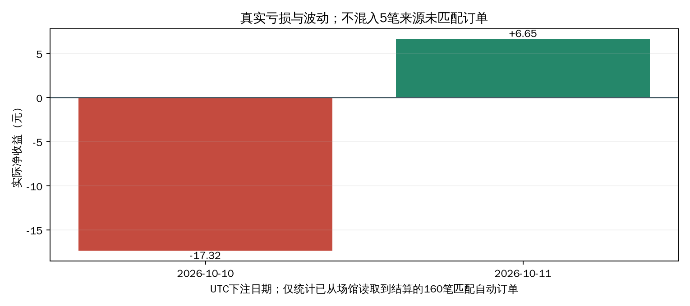
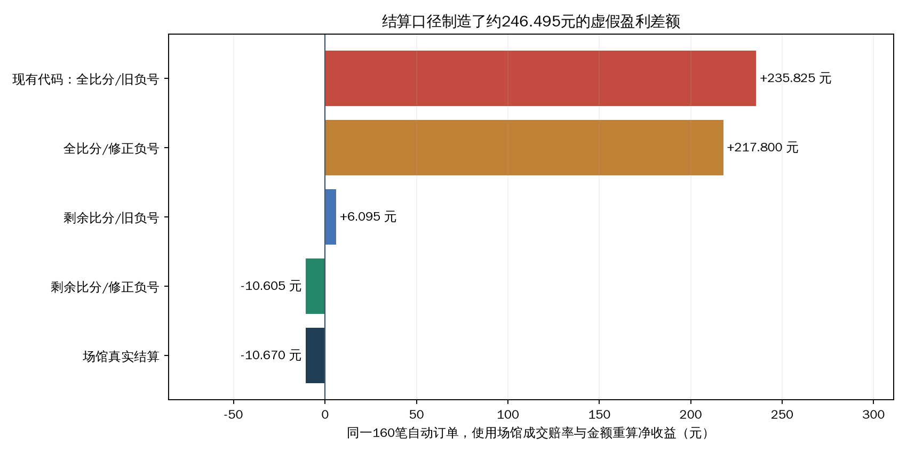
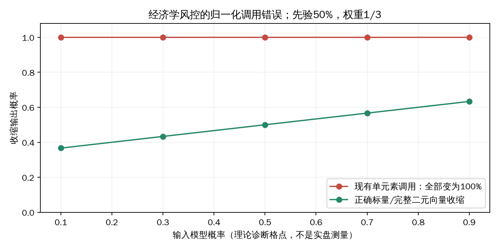

自动下注为何亏损：决策逻辑与真实结算深度审计
审计日期：2026-10-11；任务：TASK-40；业务代码基线：4f3861b。
1. 结论与证据边界
最直接的根因是模型计算的“赢”，与场馆实际结算的“赢”不是同一个事件。 当前滚球让球模型使用累计比分，而场馆按下注时比分为基准计算之后的净胜球；同时负号复合盘口被错误拆分。两处问题让已领先的球队看起来拥有很大优势，并在本地生成虚假的盈利历史。再叠加“经济学风控”把概率归一化为100%的调用错误，系统会用被污染的概率、权重和命中记录决定真金白银的投注。
已从场馆完整读取165笔已结算订单，其中160笔可按真实订单号与本地自动执行记录匹配：投入758元、净亏10.67元、实际ROI为 -1.41%。在这160笔的相同成交赔率、金额和赛果下，现有结算代码重算出盈利235.825元；79笔结算金额与场馆不一致。改用下注后的比分并修正盘口负号后，160笔全部与场馆一致，合计仅有0.065元的逐笔分钱舍入差异。
这能够确定代码缺陷，不能把120场比赛的短期负ROI直接推断为稳定的长期收益率。按比赛聚类、2000次重采样得到的95%区间约为 -11.52%～+8.26%，仍跨越零。当前应优先修复结算与概率，再检验策略是否存在独立优势；继续调下注速度、增加LLM调用或放宽入场门槛，无法修正这些错误。
| 优先级 | 根因 | 证据 | 对亏损的作用 |
|---|---|---|---|
| P0 | 滚球AH/AH_1H把累计比分当下注后比分 | A：真实回执逐笔对照；代码 | 虚假胜率、虚假EV、本地收益高估、偏向已领先一方 |
| P0 | -0/0.5、-0.5/1负号没有传递到第二半注 | A：拆盘复现；真实回执 | 让0.25被算成受让0.25，部分让0.75被算成不同组合 |
| P0 | 单元素向量收缩再归一化，概率变成1 | A：独立复现；17570条历史首判 | “经济学风控”失去概率含义，向融合概率注入确定性假象 |
| P1 | 错误结算进入权重、命中门控和训练标签 | A：调用链与SQL | 错误会自我强化；验证成绩也无法证明真实盈利 |
| P1 | 累计命中次数门控，不检验赔率、ROI或可信下界 | A：执行代码与诊断 | 5胜995负仍可获得固定金额计划 |
| P1 | 真实金额没有使用Kelly与全局未结算敞口 | A：执行代码与实盘配置 | 分析层的“25%上限”没有成为现金订单的风险约束 |
| P2 | 多算法同源、固定Poisson与启发式走势修正 | A：模型代码；机制推断 | 有模型分歧，不等于有可成交的独立预测优势 |
证据等级：A＝本仓库代码、冻结CSV、真实场馆回执、一手官方文档；B＝统计或理论推导；C＝社区经验。实盘金额与逐笔一致性为A级测量值；聚类区间为B级统计推导。本报告未使用社区收益传闻、SEO“稳赚策略”或主观打分。
2. 审计范围与真实亏损
生产容器中的service/live_expert.py、service/betting.py、core/live_model.py、core/ensemble.py、core/settlement.py、store/training_data.py与冻结工作树逐文件SHA-256一致。数据与源码哈希见data/capture.json。
远端origin/main落后于当前部署所在的功能分支；为研究实际运行逻辑，报告从部署对应的4f3861b建立独立工作树，没有回退到旧主分支。审计过程中主工作区有其他代码修改；测试使用固定业务代码的工作树，不读取那些正在变化的文件。
| 数据层 | 范围/截点 | 可回答的问题 | 限制 |
|---|---|---|---|
| 场馆已结算记录 | 165笔；两页总数均165，唯一订单号165；2026-10-11 03:12:20 UTC读取 | 真正收回或亏掉多少钱、真实结算口径 | 仅本次账户查询可见记录，不宣称覆盖账户一生 |
| 自动执行库 | 183个发送意图/回执 | 哪些真实订单由本地自动执行、旧重复、提交时延 | 记录下单状态，没有同步最终场馆结算 |
| 决策台账 | 222522条；最早10月4日；截点10月11日03:15:33 UTC | 首次预测/推荐、算法权重、模拟ROI | 包含观察、旧逻辑、单算法、实验臂，不能全部算真实下注 |
| 经济学综合首次推荐 | 1219条，其中1024条本地已结算、510场 | 已保存推荐的模拟收益 | 每个赛事/盘口线只保留首判，价格与实际成交不一定一致 |
| 训练模型状态 | 当前30参数逻辑回归，影子模式 | 已训练内容和留出验证 | 未接入真实执行，标签也需纠正 |
各SQLite库分别读取一致视图，跨库不是一个原子事务；场馆与本地读取时间相差数分钟。订单匹配使用完整场馆订单号，交付CSV只保存订单号的摘要。
| 账户范围 | 已结算订单 | 比赛 | 投入 | 净盈亏 | ROI |
|---|---|---|---|---|---|
| 查询到的全部账户记录 | 165 | 125 | 792.00元 | -29.42元 | -3.71% |
| 匹配本地自动执行的订单 | 160 | 120 | 758.00元 | -10.67元 | -1.41% |
| 未能匹配本地自动执行 | 5 | 5 | 34.00元 | -18.75元 | -55.15% |
未匹配的5笔不能直接叫“手动下注”，也不能归因给当前自动策略。 单笔20元、亏损20元的未匹配记录占据账户整体亏损的大部分；必须将“账户亏损”与“匹配自动订单亏损”分开。
自动样本全部为让球：全场AH 131笔，净亏2.76元；上半场AH 29笔，净亏7.91元。它们来自两个UTC下注日期，不等于按北京时间结算时间归属的“今日盈亏”。实际净利润采用场馆profitAmount，没有把含本金的backAmount当盈利。

来源：data/venue_settled.csv、data/actual_by_market.csv、data/actual_by_date.csv。这是测量值，未结算订单不计入收益。
3. 当前决策链究竟如何运行
flowchart TD
Q[乐鱼HTTP和WebSocket报价] --> S[冻结即时比分、阶段、时钟、盘口]
S --> G[真实足球、完整盘口、新鲜度检查]
G --> OU[从全场大小球反推剩余进球总强度]
G --> HAD[从独赢主客概率比例分配进球强度]
OU --> P[当前盘口Poisson与锚点时间衰减]
HAD --> P
P --> A[盘口支付概率与五种算法修正]
A --> E[历史权重融合、EV、相关性与Kelly]
E --> R[每条盘口线选择可买入方向]
R --> B[历史命中次数、固定金额、行情与余额复核]
B --> X[SQLite发送意图去重并提交真实订单]
R --> L[异步LLM审核和对照实验]
R --> M[独立模型影子预测]
X --> V[场馆实际结算]
E --> F[本地模拟结算]
F --> W[更新算法权重与累计命中记录]
W --> E配置版本10：五种算法全开，min_probability=0.52、min_ev=0.02、quote_max_age_s=15、anchor_max_age_s=120、fractional_kelly=0.25、max_total_exposure=0.25、risk_correlation=0.4；实盘开关已开启，betting_stake_mode=fixed、每注5元、历史命中门槛5次。
模型先从接近五五开的全场OU盘口去水概率反推出剩余总进球λ，再从HAD中的主胜/客胜比反推出主客各自强度。poisson_market使用当前强度；poisson_time_decay保留最长120秒的锚点，按剩余时间线性衰减。候选盘口从终场/半场比分分布计算赢注、输注、走水比例。
每个候选的名义收益是EV=(p_model×odds-1)×nonpush，再乘启发式成交概率并减执行成本。融合层按照历史“首判”Brier和命中率分配权重，减去算法分歧惩罚，要求概率≥52%、有效EV≥2%、尾概率<0.1%、Kelly>0，然后每个盘口线最多选择一个方向。
真实下单在LLM审核返回之前入队。 service/analysis.py:867先betting.enqueue(row)，随后才live_review.submit(row)；LLM的confirm/watch/reject用于展示和实验台账。service/model_service.py:111明确是shadow，训练预测也不回写实盘概率。旧service/decision.py、service/match_decision.py和core/entry_gate.py中的LLM主裁流程，不应被误认为当前自动下单的最终闸门。
4. P0：滚球让球的计算对象错了
4.1 正确事件是下注之后的净胜球
本样本的场馆回执提供scoreBenchmark与settleScore。对于已核验的滚球AH，令下注基准比分为(H0,A0)、结束比分为(H1,A1)，正确的让球净胜球是：
剩余主队净胜球 = (H1-H0) - (A1-A0)
主队结果 = 剩余主队净胜球 + 主队让球线
客队结果 = -剩余主队净胜球 - 主队让球线上半场AH使用该半场结束比分减下注基准比分。HAD和全场OU不能因此全部改成“剩余比分”，它们的支付对象要按各自市场规则确定。
当前代码service/live_expert.py:517构建的是包含已有比分的终场分布，:548将其直接用于AH支付；:575把全场AH的settlement_basis写成full_score，半场写成half_score_required。台账在service/ledger.py:658其实已有remaining_score分支，能够扣除entry_score，但当前实时AH估值器没有输出这个口径，所以:671仍向通用结算函数传入累计比分。根因是估值层的支付分布和口径元数据错误，不是需要再复制一套结算函数。
4.2 一笔实际订单足以显示差异
2026-10-11，伊拉普阿托对瓦拉塔曲通，场次5738163：主队在1:0时下注让0.25，成交赔率1.49、金额5元，终场仍是1:0。
| 判定口径 | 使用的净胜球 | 半注计算 | 净盈亏 |
|---|---|---|---|
| 现有代码 | 全场1球领先 | 两半注都赢 | +2.45元 |
| 正确剩余比分、正确负号 | 下注后0:0 | 0球盘走水；让0.5球盘输 | -2.50元 |
| 场馆真实结算 | scoreBenchmark=1:0、settleScore=1-0 | betResult=6，回款2.5元 | -2.50元 |
场馆回执并不是赔率滑点导致的亏损：在相同比分和价格下，模型把“还要在剩余时间赢球”的订单，算成了“已经领先即可赚钱”的订单。
4.3 160笔逐笔核验
| 同一160笔自动订单的重算方案 | 与场馆一致笔数 | 合计净利润 |
|---|---|---|
| 现有代码：累计比分＋旧负号解析 | 81/160 | +235.825元 |
| 只修负号，仍用累计比分 | 88/160 | +217.800元 |
| 只改剩余比分，保留旧负号解析 | 143/160 | +6.095元 |
| 剩余比分＋正确负号解析 | 160/160 | -10.605元 |
| 场馆实际结算 | 160/160 | -10.670元 |
一致性容差为每笔0.025元，只用于识别场馆的分钱舍入。无任何未解释的方向性结算差异。剩余比分和负号的影响并非可随意相加的独立效应，表格展示的是明确的四种重算条件。

数据：data/receipt_comparison.csv、data/settlement_scenarios.csv。这只是对既有订单的结算重算，不能视为“修复后策略将盈利”的回测；修复后模型的推荐集合本身也会变化。
4.4 台账“盈利”的大部分会消失
对1024条已结算综合首推荐，按记录中的entry_score与赛果重评分：现有模拟利润为+266.455单位、ROI +26.02%；将AH解释为下注后比分并修正符号后，利润变成-46.095单位、ROI -4.50%，427条胜负等级改变。
| 首推荐盘口 | 已结算条数 | 现有模拟利润 | 修正口径重评分利润 | 改变等级 |
|---|---|---|---|---|
| AH全场 | 765 | +208.590单位 | -43.205单位 | 321 |
| AH上半场 | 207 | +56.630单位 | -4.125单位 | 106 |
| HAD全场 | 2 | -2.000单位 | -2.000单位 | 0 |
| HAD上半场 | 2 | +0.780单位 | +0.780单位 | 0 |
| OU全场 | 10 | +1.400单位 | +1.400单位 | 0 |
| OU上半场 | 38 | +1.055单位 | +1.055单位 | 0 |
这1024条的修正是本地记录的自洽重评分，未逐条向场馆核验成交和基准时点，证据强度低于160笔真实回执。没有交易的推荐不能与现金订单的ROI混算。数据：data/ledger_counterfactual.csv。
5. P0：负号复合盘口被误解析
core/settlement.py:split_line()对/两边分别执行float()，未继承复合盘口最前面的负号：
| 原始线值 | 现有解析 | 本样本正确含义 |
|---|---|---|
-0/0.5 | [-0.0,+0.5] | [0.0,-0.5]，主队让0.25 |
-0.5/1 | [-0.5,+1.0] | [-0.5,-1.0]，主队让0.75 |
0/0.5 | [0.0,+0.5] | 相同，主队受让0.25 |
-0.5/-1 | [-0.5,-1.0] | 相同，第二段已明确标负号 |
-0/0.5在下注后的0:0下，旧代码判赢半，实际是输半；5元、赔率1.49时差额为3.725元。单独修复剩余比分后，仍有17笔不一致；修正负号后全部消失。这是模型概率、支付权重和训练标签的共同底层错误。
应在原有线值解析器统一修复并验证数据源写法，不新增平行解析业务模块。报告脚本的inherited_line()只是对照实验解释器，不参与生产；它用160笔回执验证了本样本的负号含义，而非擅自把所有未来数据源都套用同一规则。
6. P0：“经济学风控”把概率变成100%
当前service/live_expert.py:558调用：
shrink_probabilities((raw_p,), (prior,), 1, k=2.0)[0][0]core/economics.py:163会把输出向量归一化到和为1。该函数为完整互斥结果分布设计，传入只有一个元素的向量后，任何正值都被归一化成1。
输入模型概率0.60，市场先验0.50，权重1/(1+2)=1/3
应得到：0.60/3 + 0.50×2/3 = 0.533333
实际得到：0.533333 / 0.533333 = 1.0冻结台账中，economics_risk_adjusted的 17570条live_forecast全部记录p_fused=1.0。同一算法逐候选评估，因此理论上连主胜、平、客胜都可能同时变成100%，并不满足互斥概率约束。

图中格点是理论诊断输入，不是比赛测量；CSV保存输入、权重、现有输出和完整二元向量的正确输出。data/shrink_reproduction.csv。
融合层的分歧惩罚和较低历史权重有一定抑制作用，不能说这个错误必然让每个候选通过。但该算法仍保持正权重，向其他概率混入1.0；现场示例首推荐的该算法权重约8.42%。其“风控”名称并不代表实际在保守收缩。
应把它改为有明确约束的标量收缩，或传入完整二元/多元互斥概率。不能只改变k、Kelly比例或算法告警阈值：在单元素归一化下，k=1/2/5/10都仍会得到1。
7. 错误如何污染学习与验证
flowchart LR
A[累计比分误用和负号误解析] --> B[本地AH赢单与利润高估]
B --> C[历史命中次数门控通过]
B --> D[首判Brier与命中率失真]
D --> E[错误算法获得融合权重]
E --> F[继续推荐已领先球队的滚球让球]
C --> F
B --> G[训练标签与模型验证失真]
F --> H[真实场馆按下注后比分结算]
H --> I[实际收益低于本地展示]store/ledger_db.py:179将live_forecast按比赛聚类，使用本地胜负生成Brier及市场基准Brier。按比赛聚类和先验收缩是合理设计，但标签错了，统计设计不能把错标签变正确。算法警报只提示，core/ensemble.py:14明确不会禁用算法或清零权重；门槛又只看低于50%的命中率，忽略低赔率的更高盈亏平衡要求。
训练存在两层污染：
store/training_data.py:96用累计赛果直接调用settle_pick()给快照特征打标签，没有传入下注/预测时比分作为滚球AH基准；旧记录路径也直接把本地状态当标签。y=int(status in ('won','half_won'))把赢半当1、输半当0。这与AH的有效支付概率不完全一致。例如只可能赢半或输半时，净收益分别是(odds-1)/2和-1/2；若混有全赢、全输及走水，则应该估计支付权重或完整收益分布，不能统一把所有正利润事件当完整赢注。
本项目已实施按比赛划分训练/验证、训练标签结束时间早于验证输入的embargo、冻结走势输入截点和前瞻预测时间校验。这些措施能防止一部分时间泄漏，应保留。此次发现不等于“训练流程完全没有隔离”，而是结算事件定义错误，使隔离后的标签仍失真。
| 当前影子模型指标 | 数值 | 可以解释什么 |
|---|---|---|
| 模型 | 30参数L2逻辑回归 | 做概率校准，不是独立球队实力模型 |
| 留出比赛数 | 139场 | 比147904条重复时点更接近独立信息量 |
| 留出正确率 | 62.70%，市场基准59.44% | 仅对当前错误/混合标签有意义 |
| 留出Brier | 0.2140，基准0.2325 | 不能直接换算成现金ROI |
| 当前版本真实前瞻 | 2场、90条，正确率54.17% | 样本不足以证明可上线 |
| 执行模式 | shadow | 不参与当前真实投注 |
| 最近训练状态 | failed，资源限制或超时 | 需要运维处理，但不是当前下单模型亏损的直接原因 |
数据：data/model_snapshot.json。修复后要重建标签、重新评估历史算法证据，并重新训练模型；不能继续引用旧的“盈利”和“62.7%”作为上线依据。
8. 五个算法并没有五份独立信息
| 算法 | 实际信息与处理 | 主要局限 |
|---|---|---|
| 当前盘口Poisson | 用同一庄家的OU和HAD反推λ，再映射各盘口 | 模型假设差异、盘口规则差异可能被当成价格优势 |
| 时间衰减Poisson | 同样的λ，保留短锚点并按剩余时间衰减 | 没有独立进球、红牌、战术强度更新；锚点滞后可能看似套利 |
| 去水共识 | 对同一组赔率采用不同去水方法 | 方法分歧是定价不确定性，不是新增球队信息 |
| 经济学风控 | 原本应向市场先验收缩并扣风险项 | 当前单元素归一化错误，所有候选p=1 |
| 盘口微观结构 | 近最多40个采样点的赔率漂移转换成概率加减 | 不是成交量/订单簿模型，缺固定时间窗口和实测回归系数 |
若市场去水概率为p_i=(1/odds_i)/Σ(1/odds)，水钱m=Σ(1/odds)-1，则：
p_i × odds_i - 1 = 1/(1+m)-1 = -m/(1+m)仅从同一庄家公平赔率出发，在正水钱下期望必为负。不同盘口之间可以形成研究信号，但必须先保证相同结算对象、时点和赔率，再通过时间留出证明信号确实超过水钱及执行摩擦。当前大量AH“优势”被真实回执证明是计算对象错误。
进一步局限：HAD主客强度拟合主要匹配主胜/客胜的比例，没有同时充分匹配平局概率；独立Poisson未处理进球相关性、红牌和比赛状态变化；半场λ按剩余时间比例切分，没有标定上下半场进球节奏或补时分布。模型在90分钟后暂停是诚实边界，但45分钟的未知半场补时同样需要核验。
缺少HAD时会默认主客强度各半；虽然跳过HAD候选，却仍可能估值AH，直到最后才追加“球队强度无法识别”的原因。方向性输入不足应影响AH可执行状态，而不只是解释文本。类似地，输出validation_status='research'和“独立优势待验证”不会阻止非research_only的候选下单。
9. 入场闸门与现金风控脱节
9.1 命中满5次不等于有优势
service/ledger.py:recommendation_performance_many()按算法、玩法、盘口线和方向累计历史命中，不区分同一方向在不同赔率、分钟、比分、联赛的盈亏要求。service/betting.py:233只要求命中数量≥5，没有要求命中率、ROI、校准或置信区间。
离线诊断中，hit_count=5、miss_count=995、置信度1%，依然可得到固定5元的plan_bet()。真实入口还会检查当前综合推荐和行情，但历史闸门本身不能筛掉这样的坏证据。
赔率1.50的非走水下注，需要有效胜率超过66.67%才盈亏平衡；52%的基础概率门槛和“正确率没低于50%”都不够。系统虽然有EV门槛，但EV依赖上述错误概率，不能替代正确的概率和支付口径。
9.2 Kelly上限没有限制实盘现金订单
融合层限制本次单场计算推荐的Kelly总和≤25%。执行层plan_bet()只支持固定金额或“固定金额×综合置信度”，没有使用候选的Kelly计算金额，也没有从当前资金净值、所有未结算订单或已占用敞口推导余额预算。
因此Kelly分别为0.1%、5%、25%的三个推荐，都可下同样5元。每场每次计算的25%还不能约束多场累计、旧盘口线已下注后新盘口线再次下注、上下半场的共同风险。“同一盘口线不重复”不等于“同一比赛风险已经封顶”。
本报告未确认实际现金敞口已经超过某个阈值；确定的是没有代码将这个25%变成全局现金上限。固定小额可以作为受限实验设计，但仍应有单场、当日、全局未结算风险预算和原子资金预留。
9.3 所谓综合置信度不是校准后的胜率
当前置信度由历史算法正确率、算法分歧、历史累计命中再折算，且历史结算受污染。它不是特定盘口的可信区间、胜率下界，也不是证明模型比庄家准的统计量。固定金额模式甚至完全不按此值缩减额度。
10. 执行问题：哪些已修，哪些仍缺
183个本地记录中：136条pending、28条accepted、16条rejected、2条unknown、1条sending。场馆已经结算160笔匹配订单，但本地下单回执仍保留接受/待确认状态；它不是资金结算账本。
当前去重键绑定账号、赛事、玩法、盘口线、方向，持久发送意图先落库、未知回执不自动重发，提交前复核原始盘口ID、赔率、比分和阶段。这些是有效防护。本样本有1组历史同选择重复，共3次提交、2次额外订单；文档已说明旧版本曾将赔率纳入唯一键，当前实现已修复，不能把这2次旧重复说成当前每笔亏损的根因。
97条订单保存了“所选报价接收到socket发送”的指标，97条均≤2000毫秒，最大1989.923毫秒。其余86条没有这一指标，不能补报。两秒指标不包含上游事件到报价延迟，也不代表场馆接受/最终确认在两秒内完成；q_fill_model()的95%基准、EV敏感度2和固定0.1%执行成本仍是未经该账户实测标定的启发式。
现有证据不支持将本次主要问题归因于下单太慢。 即使每次都能立即成交，错的支付对象和概率仍会挑错订单。需按最终accepted/settled状态估计条件收益，不能用“发送成功率”替代盈利证据。
stateDiagram-v2
[*] --> Candidate
Candidate --> Blocked: 规则未核验或无独立优势
Candidate --> Reserved: 支付口径与全局资金预算通过
Reserved --> Sending: 持久发送意图
Sending --> Accepted: 唯一场馆订单号
Sending --> Unknown: 发送后超时或回执不完整
Sending --> Rejected: 场馆明确拒绝
Unknown --> Accepted: 只读订单对账确认
Unknown --> Rejected: 只读订单对账确认
Accepted --> Settled: 场馆权威金额与基准比分
Settled --> Reconciled: 本地支付模型逐笔核对
Reconciled --> [*]
Rejected --> [*]
Blocked --> [*]该状态图是修复方案，不宣称当前已经实现资金预留和终态对账。
11. 成熟方案的设计对照
对照用于说明“独立信息、价格比较、订单终态”各自负责什么，不是建议立即更换供应商。本次只核验官方文档，没有接入这些服务或测量它们的实盘延迟。
| 维度 | Betfair Exchange / Stream API | Pinnacle官方API / 价格参考 | StatsBomb（Hudl）事件数据＋独立模型 | 当前项目 |
|---|---|---|---|---|
| 数据输入 | 市场流、订单流 | 赛事、盘口、下注与订单接口 | 事件、阵容、部分360数据 | 单一乐鱼报价、比分、时钟 |
| 独立信息来源 | 可作为其他庄家价格参照；本身不是球队预测 | 另一市场价格参考；不自动产生alpha | 球场事件与球队特征可独立于赔率 | 五算法主要使用相同赔率 |
| 时点处理 | 增量行情、线程安全缓存和重连订阅 | 文档使用GMT/ISO时间；需调用方管理报价时点 | 历史开放数据用于研究；商业实时需另行核验 | 有冻结输入与报价/状态新鲜度 |
| 支付语义 | 市场/选项规则、匹配订单状态要对齐 | 明确盘口与Bet接口；仍需逐类核验规则 | 事件模型不负责博彩结算，需独立支付适配层 | 本样本AH规则与代码不一致 |
| 成交验证 | 订单订阅与成交信息 | 文档提供订单API与去重ID | 不提供真实资金订单 | 只有发送/接受回执，未联动最终资金结算 |
| 经济性验证 | 比较实际匹配价与费用后的收益 | 比较报价差并核对接受后的收益 | 概率校准后按真实价格映射支付分布 | 错误标签制造正EV与模拟利润 |
| 风险管理 | 账户与匹配头寸仍需策略层管理 | 限额/订单规则不能替代自有现金预算 | 需外接资金与组合层 | 单场Kelly展示与固定现金额度脱节 |
| 覆盖与依赖风险 | 市场覆盖、账户及权限需核验；本次未测 | 2025-07-23起不再向公众开放API，商业合作需申请 | 开放数据是选定比赛的历史样本，不是免费实时全覆盖 | 数据源单一；文档与实现存在规则漂移 |
一手来源：
- Betfair官方Stream示例：行情/订单订阅、线程安全缓存、重连语义。A，2026-10-11读取官方README。
- Pinnacle官方API说明：时间格式、Bet API、uniqueRequestId去重和公众访问关闭说明。A，2026-10-11读取。
- Hudl/StatsBomb官方开放数据：比赛、事件、阵容及360数据结构；明确是选择性历史数据。A，2026-10-11读取。
- scikit-learn概率校准文档：概率可靠性和proper scores。A，2026-10-11核验页面可访问；未把校准指标当作策略收益。
12. 修复顺序与验收条件
建议先暂停自动执行，保持只读采集与影子评估。 这是分析建议，本次没有改动实盘开关。
| 顺序 | 具体改动 | 可验证的完成条件 |
|---|---|---|
| 1 | 为每种市场明确settlement_basis，AH/AH_1H使用下注基准比分；缺少已核验规则时禁止可执行推荐 | 模型支付、本地模拟结算、真实场馆回执使用相同事件；160笔历史订单逐笔匹配，仅允许分钱舍入 |
| 2 | 原解析器正确处理继承负号、负零及已有显式符号 | -0/0.5、-0.5/1、正受让、客队方向、半赢半输边界均有真实回执测试 |
| 3 | 修复标量概率收缩或改用完整互斥向量 | 输出位于模型/先验之间；HAD结果和为1；无信息输入不制造大面积正EV |
| 4 | 隔离旧结算/权重/命中历史，按新规则重评分并版本化 | 旧统计不再进入新门控和算法权重；无法恢复下注基准的历史行明确标未知 |
| 5 | 补齐订单终态对账 | 订单号串联推荐快照、实际赔率/金额、基准比分、场馆接受和结算；账户与自动订单利润可对上 |
| 6 | 重建训练标签和正确支付目标 | AH使用剩余比分；保留赢/输/走水/赢半/输半分布或支付权重；按比赛和时间留出 |
| 7 | 改历史闸门为对当前赔率及状态有意义的证据 | 累计命中不再独立授予下单资格；比较价格对应的盈亏平衡胜率及校准/净收益区间 |
| 8 | 接通全局现金风险预算 | 所有未结算订单与待发送预留共同占用预算；同场多线/多方向累计风险有硬限制 |
| 9 | 证明信号优势后才恢复小额执行 | 新规则下、从未参与调参的时间留出和真正前瞻数据同时呈现校准、覆盖、实际净ROI与聚类区间 |
不能只把EV门槛由2%改成5%或把历史命中门槛提高到10。错误的比赛事件会继续产生很高的假EV；累计命中量随时间增长，即使亏损策略也可能过门槛。也不能只禁用“经济学风控”：其他Poisson算法仍共享AH支付错误。
修复应保留现在已经有效的报价检查、持久去重、未知回执不重发和时间隔离。只有修正规则后，才适合讨论额外球场信息、独立球队模型、盘口趋势是否有预测增益。
13. 敏感性与不能推出的结论
- 资金规模：相同投注集合线性放大金额会同比放大盈亏与结算误差，不能改变ROI方向；当前固定5元可以限制绝对损失，但不创造优势。
- 概率收缩强度：
k增减不会修复单元素归一化。该缺陷不依赖本样本的赔率或球队。 - 历史命中门槛：3/5/10只改变何时累积到足够“赢次”，不能识别价格变化或5胜995负；应改门控对象。
- 结算核验容差：0.025元用于分钱舍入，修正后的差异最大仅为几厘/一分钱；现有代码的差异涉及全赢、走水、输半和全输，不会因合理舍入标准消失。
- 实际收益不确定性：160笔订单含同场相关性，因此区间按120场聚类；没有把订单数当作独立比赛数。95%区间跨零，不证明稳定赚钱，也不证明未来每期必亏。
- 资金归因：5笔未匹配记录可能来自手动、旧执行器或其他途径。本报告不能识别来源，不将其亏损算给自动策略。
- 策略修复后收益：本次重评分固定了原订单/原推荐集合，不是新策略前瞻。修复逻辑正确只是恢复可评价性，并非证明具有正期望。
- 抓取与时延：有97条真实发送时延证据，不能据此覆盖全部历史订单或保证场馆确认速度；也不能用未知上游延迟解释已确认的数学口径错误。
14. 重现与验证
报告保存4类原始冻结输入CSV、8类派生/诊断CSV（合计12个CSV）、JSON元数据与3张中文图。md_to_html.py复用既有渲染器，Mermaid联网渲染；离线时显示可读图源。图表不会调用账户接口，数据分析脚本不会提交订单。
# 固定业务代码工作树中，全套标准库测试
./scripts/cpu-limited.sh run -- python3 -m unittest discover -s tests -q
# 从冻结CSV重算归因，不重读实时库
./scripts/cpu-limited.sh run -- python3 reports/auto-betting-loss-audit/scripts/audit.py
# 缺陷复现与边界检查
./scripts/cpu-limited.sh run -- python3 reports/auto-betting-loss-audit/scripts/reproduce.py
# 报告脚本编译
python3 -m py_compile reports/auto-betting-loss-audit/scripts/*.py
# 所有派生数据与3张图：必须容器执行并挂载中文字体
docker run --rm --cpus=1 --memory=768m \
-v "$PWD:/w" \
-v /usr/share/fonts/truetype/wqy:/usr/share/fonts/truetype/wqy:ro \
-w /w python:3.12-slim sh -c \
'pip install -q numpy matplotlib && python3 reports/auto-betting-loss-audit/scripts/make_figures.py'
# Markdown与Mermaid输出HTML
python3 reports/auto-betting-loss-audit/scripts/md_to_html.py \
reports/auto-betting-loss-audit/REPORT.md \
reports/auto-betting-loss-audit/REPORT.html| 验证 | 结果 |
|---|---|
| 全套unittest | 退出码0，1329 tests，14 skipped，55.425秒；宿主实际Python 3.13.5 |
| 相关模块专项unittest | 退出码0，140 tests；仅模拟网络/订单，无新实盘交易 |
| 报告诊断 | 退出码0，5项检查，覆盖正常/异常、缺比分、无效盘口与门控边界 |
| 脚本编译 | 退出码0 |
| 全仓库编译 | 退出码0，121个Python文件；冻结业务源码哈希保持一致 |
| 类型与lint | Python3.12受限临时容器内执行python -m mypy、python -m ruff check .，两者退出码0；84文件无类型问题、All checks passed |
| 容器图表全量重建 | 退出码0，3张PNG，具名参数与CSV可复核，中文字体已挂载 |
| 真实结算对照 | 160/160在0.025元逐笔舍入容差内一致 |
现有测试全绿并不证明实盘结算规则正确。 这些测试没有覆盖真实滚球AH的基准比分，也没有断言“经济学风控”标量收缩后的概率应处于输入与先验之间；本报告的诊断是在独立离线条件下把这两类缺陷明确复现出来。
类型/lint、HTML在线/离线浏览器核验与交付卫生结果记录在data/verification.json。业务模块和实时开关未修改，未重新部署运行服务。